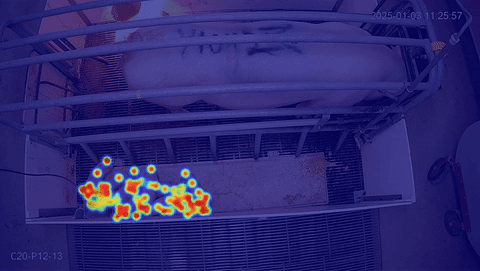

HPCC MMPose Annotation Workflow
Ubuntu-based software pipeline for keypoint annotation, dataset preparation, and MMPose training on the MSU HPCC

Why
HPC-based deep learning is powerful but brutal to set up — mismatched OpenMMLab versions, brittle Conda installs, COCO format quirks, and SLURM job configuration all create friction before a single training run starts. This pipeline eliminates that overhead: a complete, reproducible workflow from raw image annotation through SLURM-submitted GPU training on the MSU HPCC, documented for reuse by any lab member on any future keypoint dataset.
Built Jan–Mar 2026. Directly underpins the Piglet Keypoint Detection project.
With
📁 Prepare
- Raw Images
Roboflow or local storage - Annotation Tool
Ubuntu GUI keypoint labeling - COCO Converter
Python → COCO JSON format
⚙️ Train
- Conda Environment
Pinned OpenMMLab stack - MMPose Config
Auto-generated per dataset - SLURM Submission
GPU batch job templates
📊 Output
- Checkpoint (.pth)
Trained model weights - Metrics
PCK / AP per epoch - Visualizations
Keypoint overlays on test images
Which
💻 Stack
- Ubuntu 22.04 · MMPose · MMEngine · MMCV
- PyTorch + CUDA · Conda · SLURM
- Python + Bash scripting
🖥️ HPC
- MSU HPCC — SLURM-managed cluster
- NVIDIA A100 / V100 via SLURM allocation
- CUDA + cuDNN module system
- Shared filesystem for datasets & checkpoints
🔑 Key Scripts
setup_env.sh— one-command Conda buildconvert_to_coco.py— annotation → COCO JSONgen_config.py— MMPose config generatorsubmit_train.sh— SLURM batch templatevisualize_results.py— keypoint overlayparse_logs.py— metric extraction + plotting
Wrinkles
OpenMMLab Version Hell on HPCC
Challenge — MMPose/MMEngine/MMCV/PyTorch have tight interdependencies. HPCC's CUDA module version further constrains the compatible matrix — naive pip install reliably fails.
Solution — Pinned a tested version matrix against HPCC CUDA 11.7 and exported as environment.yml — one-command reproducible setup for any HPCC account.
Custom Keypoint COCO Conversion
Challenge — Annotation tools don't export custom keypoint schemas in COCO format. Manual conversion is tedious and error-prone.
Solution — convert_to_coco.py is parameterized by keypoint names and skeleton connectivity — handles arbitrary counts, generates proper metadata, and validates output JSON against MMPose's expected schema.
SLURM Config for First-Timers
Challenge — Wrong GPU count, memory, or walltime estimates kill SLURM jobs silently. New lab members had no starting point.
Solution — Templated batch scripts with sensible defaults and inline comments. Includes a short benchmark job to estimate per-epoch time before committing to a full run.
Wins
Pipeline validated end-to-end training the 7-keypoint piglet model on HPCC A100 nodes.
- Environment setup: hours of troubleshooting → single script
- COCO converter reusable for any future lab keypoint dataset
- SLURM templates successfully completed GPU training runs
- Visualization pipeline confirmed correct keypoint predictions
- Fully documented — transferable to any lab member